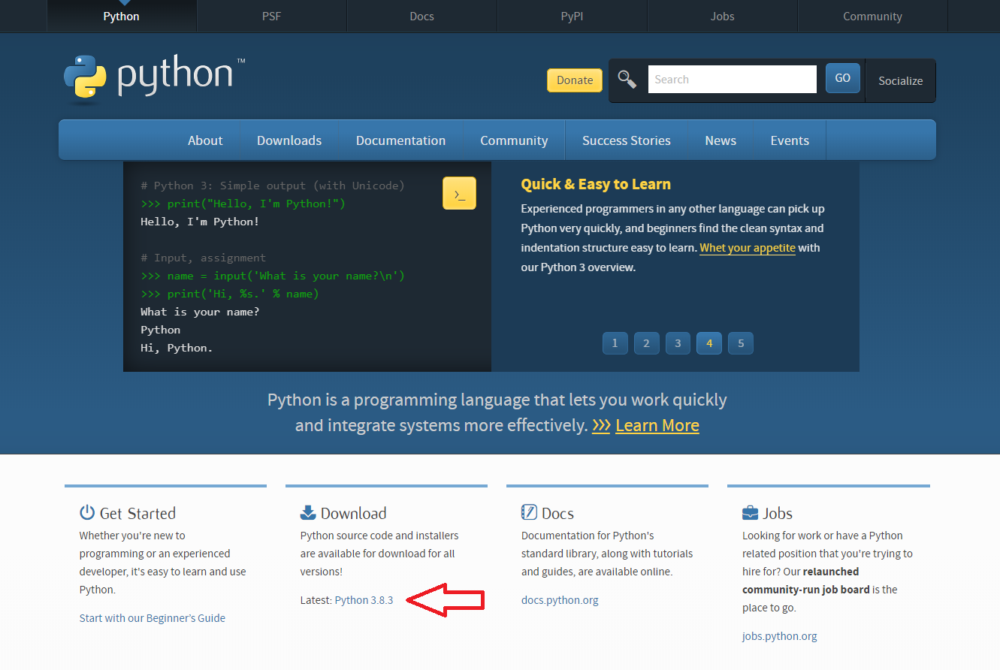

图片转换字符画
前言
闲得无聊，所以用Python搞出一个图片转字符画的黑科技，还有字符转图片
前提
前提是你安装好了Python以及PIL库
如果你没有Python或者PIL库,请阅读以下文章。如果你有了Python或者PIL库,请点我
安装Python以及PIL
官网进入官网你会获得以下界面
找到Download,会有Latest：Python 3.8.3（版本），点击即可下载。
在安装时，如有PIP，请选中。安装完成后，请打开cmd，输入pip install Pillow
这时，已经完成了Python和PIL的安装。
下载
下载完成后请解压。
使用
要转换的图片请放到和py文件同一目录下，重命名为img
首先打开字符画.py，输入图片原尺寸，以及加倍数。
完成会生成out.txt文件其次打开文本转图片.py，依旧输入图片原尺寸以及加倍数。
完成后获得字符图片。后记
作者：琰凛